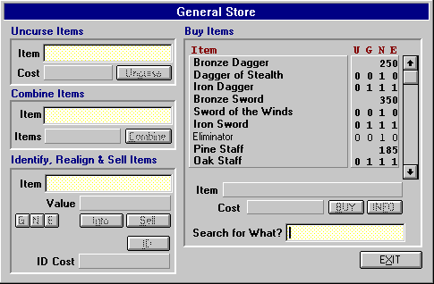

The City: Store

On the right is the list of items currently available. The UGNE represents the number of the specified items that are available for the given alignment (U for unaligned). Items that can only be bought in the store (and not found in the dungeon) are displayed with a fixed price (i.e. 350 Gold for a Bronze Sword). Items that are displayed in bold are items that your character can currently use. Items not in bold cannot be used by your character (i.e. Guild, Level, Stat Restrictions). To select an item, simply click on it (and select the alignment if prompted). For Information on an item, click INFO. To buy it, click BUY. To search for an item, simply type in part of or the whole name of the item you are looking for and hit return.
To Sell or Identify an Item, Drag and Drop the selected item from your Items Window into the Item Text Box in the Sell, Identify & Realign Items area.
Tan-Yellow shaded areas in the Store Window represent fields where you can either type in data or Drag and Drop an item. Dark-Gray shaded areas in the Store Window represent fields that just display information.
Store Inventory
When you sell an item to the store, it will be added to the inventory list and available for purchase by others. However, other adventurers and explorers (the Morgue rescuers need items, too!) may sometimes buy items from the store as well. This can be a disadvantage if the item they purchase is the last of it's type in stock - especially if it's an item that your characters can use. The advantage to this is that these individuals also sell the items they find on their explorations to the store as well. Because of this, it's recommended that one check the store for any new inventory every once and awhile - you never know what you'll find!
Available options within the store are as follows:
Buying Items
You can make a purchase by clicking on the desired item in the list of available items (and selecting the alignment if prompted) then pressing the BUY button.
You should buy and equip your character with a weapon and whatever protection (armor, cloak) you can afford and use from the store. Standard attire for a beginning Nomad is a Sword, Armor, Gloves, Boots, Cloak, Shield and Cap.
Selling Items
You can Sell items you have in your possession by either typing the number of the item into the Sell Item field and pressing Return, or Dragging & Dropping the desired item in the Sell Item Field, then clicking the SELL button. This 'section' also allows you to identify and realign items (described below).
Any item you sell to the store will be available for purchase, but usually at a much higher price than you sold it for. Sometimes, when you sell an item with "charges" (i.e. Potion of Healing [2]), the item won't appear in the store. This is because the item had too few available "charges" to put it back on the shelf. Also, when you sell an item that has many charges (i.e. Potion of Health [23]), you will notice a '23->20' next to the sell value. This means the store will buy charges from you in "chunks" of three (for the above example) for the specified price. When you sell a "chunk", one of that item type then becomes available for purchasing in the store.
This section of the store supports direct Drag and Drop from your Items Window.
Learning about an item
To learn about an item, simply select/drag it into the 'Sell & Identify Item' area and click the ID button. This gives you different information depending upon your current knowledge of the item, which is based on your character's Intelligence, Wisdom and Guild Level. How much you know about an item is determined initially by your intelligence and wisdom. You will be able to identify some items when you find them and most others will require a fee to learn more.
When you bring up the Information on an item in the Stats Window Misc Tab, the stats displayed will be dependent on your current knowledge of an item. For a complete overview of the Item Information Window, please see the Game Screen Section in this Helplesson
Combine
Allows you to combine items that have charges. For example, you can combine two Potions of Health into one Potion of Health with the sum of the charges on the two different potions. To combine items, simply drag (or type) the items to the Item section (which will add the item to the Items list so you can see what you're combining) and click COMBINE. If the items are of like type (e.g. 2 Potions of Health) and can be combined, the first item you selected will now hold the sum of all the other items charges! Items like Swords, Armor, etc. cannot be combined.
This section of the store supports direct Drag and Drop from your Items Window.
Uncurse an item
This is the only way to remove a curse from an item, which usually requires a substantial fee. A "cursed" item is either an item that is of opposite alignment to your character (i.e. Iron Sword (e) equipped by a Good character), or an item that's outrightly cursed (i.e. Gloves of the Blackguard). The only good thing about getting an item uncursed is that the store clerk will completely identify the item before removing it.
This section of the store supports direct Drag and Drop from your Items Window.
Realign an item
This allows you to change the alignment of certain items. It provides an alternative to trading with other characters, but can be expensive. To realign an item, simply select/drag it in the 'Sell & Identify Item' area and click one of the three 'GNE' buttons.
Recharging Items
You can recharge items that cast spells (i.e. Swords, Artifacts) by selling them to the store and buying them back (the recharging fee being the difference in sell vs. cost price). You cannot recharge items such as Potions, Scrolls, etc. This means if you sell a Potion of Healing [1] to the store (where it normally comes with 3 charges), it will not appear in the store's inventory because there wasn't enough left of the potion to create a whole one. However, if you sell items such as Swords & Artifacts with [0] charges, they will be completely recharged and available for repurchasing.
With all options in the city, gold will be removed from your bank account if you do not have enough on your character's person, but do in your account.
Move to the next section to read about Holding & Confinement.
Move to the previous section to read about the City Seer.
M1: "The Depths of Dejenol" is a Trademark of Decklin's Domain Ltd and is © Copyright 1994-2026 All Rights Reserved